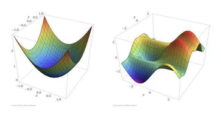

1. 机器学习数学基础
-
高等数学
-
线性代数
-
概率论和统计学
1.1. 线性代数
1.1.1. 什么是矩阵
-
矩阵（Matrix）是一个按照长方阵列排列的复数或实数集合
-
矩阵最早来自于方程组的系数及常数所构成的方阵，最初是用来解决线性方程求解的工具
-
矩阵是高等代数中的常见工具，也常见于统计分析等应用数学学科中；矩阵在物理学和计算机科学中都有应用
-
矩阵的运算是数值分析领域的重要问题
1.1.2. 矩阵
矩阵的定义
以上是\(m \times n\)矩阵的定义。
-
由\(m \times n\)个数\(a_{ij}, (i = 1,2,...,m; j = 1,2,...,n)\)排成的m行n列的数表 A就称为m行n列的矩阵。
-
这\(m \times n\)个数称作矩阵A的元素\(a_{ij}\)，元素位于矩阵A的第i行第j列。
-
\(m \times n\)矩阵A可以记作\(A_{m \times n}\)，其中m是行数，n是列数，m, n > 0。
特殊矩阵
对于\(A_{m \times n}\)，如果m=n，即矩阵的行数与列数相等，那么称A为方阵。例如：
1.1.3. 矩阵中的概念
-
行数与列数都等于n的矩阵称为n阶矩阵，又称做n阶方阵，可以记作\(A_n\)。
-
只有一行的矩阵\(A_{1 \times n}\)称为行矩阵，又叫行向量。
-
同样，只有一列的矩阵\(A_{n \times 1}\)称为列矩阵，又叫列向量。
-
对于方阵，从左上角到右下角的直线，叫做主对角线，主对角线上的元素称为主对角线元素。
特殊矩阵
-
矩阵的元素全部为0，称为零矩阵，用O表示。
-
对于方阵，如果只有对角线元素为1，其余元素都为0，那么称为单位矩阵，一般用I或者E表示。
-
对于方阵，不在对角线上的元素都为0，称为对角矩阵。
1.1.4. 矩阵的加法
-
把矩阵的对应位元素相加。
-
矩阵的形状必须一致，即必须是同型矩阵。
1.1.5. 矩阵的乘法
数与矩阵相乘
数值与矩阵每一个元素相乘。
矩阵与矩阵相乘
-
左矩阵的每一行与右矩阵的每一列，对应每一个元素相乘。
-
\(A \times B\)，那么有A矩阵\(m \times n\)，B 矩阵\(n \times k\)，要求左侧矩阵的列数n，必须等于右侧矩阵的行数n，结果矩阵C为\(m \times k\)矩阵。
定义：
练习：
1.1.6. 矩阵的转置
-
把矩阵A的行换成相同序数的列，得到一个新矩阵，叫做A的转置矩阵，记作\(A^T\)
-
行变列，列变行
-
A 为\(m \times n\)矩阵，转置之后为\(m \times n\)矩阵
1.1.7. 矩阵的运算方法
加法
-
\(A + B = B + A\)
-
\((A + B) + C = A + (B + C)\)
乘法
-
\((λμ)A = λ(μA)\)
-
\((λ + μ)A = λA + μA\)
-
\(λ(A + B) = λA + λB\)
-
\((AB) C = A(BC)\)
-
\(λ(AB) = (λA)B = A(λB)\)
-
\(A(B + C) = AB + AC\)
-
\((B + C)A = BA + CA\)
减法
-
\(A - B = A + B × (-1)\)
-
\(A - A = A + (-A) = O\)
转置
-
\((A^T)^T = A\)
-
\((A + B)^T = A^T + B^T\)
-
\(λ(A)^T = λA^T\)
-
\((AB)^T = B^T A^T\)
1.1.8. 矩阵的逆
-
对于n阶方阵A，如果有一个n阶方阵B，使得\(AB = BA = E\)，就称矩阵A是可逆的，并把B称为A的逆矩阵。
-
A的逆矩阵记作\(A^{-1}\)，如果\(AB = BA = E\)，则\(B = A-1\)。
1.2. 微积分基础知识
-
什么是导数
-
偏导数
-
方向导数和梯度
-
凸函数和凹函数
1.2.1. 什么是导数
-
导数反映的是函数y = f(x)在某一点处沿x轴正方向的变化率
-
在x轴上某一点处，如果f'(x)>0，说明f(x)的函数值在x点沿x轴正方向是趋于增加的；如果f'(x)<0，说明f(x)的函数值在x点沿x轴正方向是趋于减少的
1.2.2. 偏导数
-
导数与偏导数本质是一致的，都是当自变量的变化量趋于0时，函数值的变化量与自变量变化量比值的极限
-
偏导数也就是函数在某一点上沿某个坐标轴正方向的的变化率
-
导数指的是一元函数中，函数y=f(x)在某一点处沿x轴正方向的变化率；而偏导数，指的是多元函数中，函数\(y=f(x_1,x_2,…,x_n)\)在某一点处沿某一坐标轴\((x_1,x_2,…,x_n)\)正方向的变化率
1.2.3. 方向导数
-
函数某一点在某一趋近方向（向量方向）上的导数值
-
方向导数就是函数在除坐标轴正方向外，其他特定方向上的变化率
1.2.4. 梯度（Gradient）
问题：函数在变量空间的某一点处，沿着哪一个方向有最大的变化率？
答案：梯度。
-
定义：函数在某一点的梯度是这样一个向量，它的方向与取得最大方向导数的方向一致，而它的模为方向导数的最大值
-
梯度是一个向量，即有方向、有大小；
-
梯度的方向是最大方向导数的方向；梯度的值是最大方向导数的值
1.2.5. 凸函数和凹函数

凸函数
凸函数是具有如下特性的一个定义在某个向量空间的凸子集C（区间）上的实值函数f：对其定义域C上的任意两点\(x_{1},x_{2}\)，总有\(f(\frac{x_1+x_2}{2}) \le \frac{f(x_1)+f(x_2)}{2}\)。
凹函数
我们称一个有实值函数f在某区间（或者某个向量空间中的凹集）上是凹的，如果对任意该区间内不相等的x和y和[0,1]中的任意t有
某函数f:R→R，在x和y之间的每一点z，在图中的点(z, f(z))是在以点(x, f(x)) and (y, f(y))连成的直线之上。

1.3. 概率论和统计学
-
常用统计变量
-
常见概率分布
-
重要概率公式
1.3.1. 常用统计变量
-
样本均值
-
样本方差
-
样本标准差
1.3.2. 常见概率分布
-
均匀分布
-
正态分布（高斯分布）
-
指数分布

1.3.3. 重要概率公式
-
条件概率公式
-
全概率公式
-
贝叶斯公式
2. 数学基础(精简进阶版)
2.1. 线性代数
下面分别概括了向量、矩阵、运算、范数、特征向量和特征值的概念。
2.1.1. 向量
本书中的向量指的是列向量。一个\(n\)维向量\(\boldsymbol{x}\)的表达式可写成
其中\(x_1, \ldots, x_n\)是向量的元素。我们将各元素均为实数的\(n\)维向量\(\boldsymbol{x}\)记作\(\boldsymbol{x} \in \mathbb{R}^{n}\)或\(\boldsymbol{x} \in \mathbb{R}^{n \times 1}\)。
2.1.2. 矩阵
一个\(m\)行\(n\)列矩阵的表达式可写成
其中\(x_{ij}\)是矩阵\(\boldsymbol{X}\)中第\(i\)行第\(j\)列的元素（\(1 \leq i \leq m, 1 \leq j \leq n\)）。我们将各元素均为实数的\(m\)行\(n\)列矩阵\(\boldsymbol{X}\)记作\(\boldsymbol{X} \in \mathbb{R}^{m \times n}\)。不难发现，向量是特殊的矩阵。
2.1.3. 运算
设\(n\)维向量\(\boldsymbol{A}\)中的元素为\(a_1, \ldots, a_n\)，\(n\)维向量\(\boldsymbol{b}\)中的元素为\(b_1, \ldots, b_n\)。向量\(\boldsymbol{A}\)与\(\boldsymbol{b}\)的点乘（内积）是一个标量：
设两个\(m\)行\(n\)列矩阵
矩阵\(\boldsymbol{A}\)的转置是一个\(n\)行\(m\)列矩阵，它的每一行其实是原矩阵的每一列：
两个相同形状的矩阵的加法是将两个矩阵按元素做加法：
我们使用符号\(\odot\)表示两个矩阵按元素做乘法的运算：
定义一个标量\(k\)。标量与矩阵的乘法也是按元素做乘法的运算：
其他诸如标量与矩阵按元素相加、相除等运算与上式中的相乘运算类似。矩阵按元素开根号、取对数等运算也就是对矩阵每个元素开根号、取对数等，并得到和原矩阵形状相同的矩阵。
矩阵乘法和按元素的乘法不同。设\(\boldsymbol{A}\)为\(m\)行\(p\)列的矩阵，\(\boldsymbol{B}\)为\(p\)行\(n\)列的矩阵。两个矩阵相乘的结果
是一个\(m\)行\(n\)列的矩阵，其中第\(i\)行第\(j\)列（\(1 \leq i \leq m, 1 \leq j \leq n\)）的元素为
2.1.4. 范数
设\(n\)维向量\(\boldsymbol{x}\)中的元素为\(x_1, \ldots, x_n\)。向量\(\boldsymbol{x}\)的\(L_p\)范数为
例如，\(\boldsymbol{x}\)的\(L_1\)范数是该向量元素绝对值之和：
而\(\boldsymbol{x}\)的\(L_2\)范数是该向量元素平方和的平方根：
我们通常用\(\|\boldsymbol{x}\|\)指代\(\|\boldsymbol{x}\|_2\)。
设\(\boldsymbol{x}\)是一个\(m\)行\(n\)列矩阵。矩阵\(\boldsymbol{x}\)的Frobenius范数为该矩阵元素平方和的平方根：
其中\(x_{ij}\)为矩阵\(\boldsymbol{x}\)在第\(i\)行第\(j\)列的元素。
2.1.5. 特征向量和特征值
对于一个\(n\)行\(n\)列的矩阵\(\boldsymbol{A}\)，假设有标量\(\lambda\)和非零的\(n\)维向量\(\boldsymbol{v}\)使
那么\(\boldsymbol{v}\)是矩阵\(\boldsymbol{A}\)的一个特征向量，标量\(\lambda\)是\(\boldsymbol{v}\)对应的特征值。
2.2. 微分
我们在这里简要介绍微分的一些基本概念和演算。
2.2.1. 导数和微分
假设函数\(f: \mathbb{R} \rightarrow \mathbb{R}\)的输入和输出都是标量。函数\(f\)的导数
且假定该极限存在。给定\(y = f(x)\)，其中\(x\)和\(y\)分别是函数\(f\)的自变量和因变量。以下有关导数和微分的表达式等价：
其中符号\(\text{D}\)和\(\text{d}/\text{d}x\)也叫微分运算符。常见的微分演算有\(\text{D}C = 0\)（\(C\)为常数）、\(\text{D}x^n = nx^{n-1}\)（\(n\)为常数）、\(\text{D}e^x = e^x\)、\(\text{D}\ln(x) = 1/x\)等。
如果函数\(f\)和\(g\)都可导，设\(C\)为常数，那么
如果\(y=f(u)\)和\(u=g(x)\)都是可导函数，依据链式法则，
2.2.2. 泰勒展开
函数\(f\)的泰勒展开式是
其中\(f^{(n)}\)为函数\(f\)的\(n\)阶导数（求\(n\)次导数），\(n!\)为\(n\)的阶乘。假设\(\epsilon\)是一个足够小的数，如果将上式中\(x\)和\(a\)分别替换成\(x+\epsilon\)和\(x\)，可以得到
由于\(\epsilon\)足够小，上式也可以简化成
2.2.3. 偏导数
设\(u\)为一个有\(n\)个自变量的函数，\(u = f(x_1, x_2, \ldots, x_n)\)，它有关第\(i\)个变量\(x_i\)的偏导数为
以下有关偏导数的表达式等价：
为了计算\(\partial u/\partial x_i\)，只需将\(x_1, \ldots, x_{i-1}, x_{i+1}, \ldots, x_n\)视为常数并求\(u\)有关\(x_i\)的导数。
2.2.4. 梯度
假设函数\(f: \mathbb{R}^n \rightarrow \mathbb{R}\)的输入是一个\(n\)维向量\(\boldsymbol{x} = [x_1, x_2, \ldots, x_n\)^\top]，输出是标量。函数\(f(\boldsymbol{x})\)有关\(\boldsymbol{x}\)的梯度是一个由\(n\)个偏导数组成的向量：
为表示简洁，我们有时用\(\nabla f(\boldsymbol{x})\)代替\(\nabla_{\boldsymbol{x}} f(\boldsymbol{x})\)。
假设\(\boldsymbol{x}\)是一个向量，常见的梯度演算包括
类似地，假设\(\boldsymbol{x}\)是一个矩阵，那么
2.2.5. 海森矩阵
假设函数\(f: \mathbb{R}^n \rightarrow \mathbb{R}\)的输入是一个\(n\)维向量\(\boldsymbol{x} = [x_1, x_2, \ldots, x_n\)^\top]，输出是标量。假定函数\(f\)所有的二阶偏导数都存在，\(f\)的海森矩阵\(\boldsymbol{H}\)是一个\(n\)行\(n\)列的矩阵：
其中二阶偏导数
2.3. 概率
最后，我们简要介绍条件概率、期望和均匀分布。
2.3.1. 条件概率
假设事件\(A\)和事件\(B\)的概率分别为\(P(A)\)和\(P(B)\)，两个事件同时发生的概率记作\(P(A \cap B)\)或\(P(A, B)\)。给定事件\(B\)，事件\(A\)的条件概率
也就是说，
当满足
时，事件\(A\)和事件\(B\)相互独立。
2.3.2. 期望
离散的随机变量\(X\)的期望（或平均值）为
2.3.3. 均匀分布
假设随机变量\(X\)服从\([a, b\)]上的均匀分布，即\(X \sim U(a, b)\)。随机变量\(X\)取\(a\)和\(b\)之间任意一个数的概率相等。
3. 机器学习简介
-
机器学习的概念
-
机器学习主要分类
-
监督学习三要素
-
监督学习模型评估策略
-
监督学习模型求解算法
3.1. 机器学习的概念
-
机器学习是什么
-
机器学习的开端
-
机器学习的定义
-
机器学习的过程
-
机器学习示例
3.1.1. 机器学习是什么
-
什么是学习
-
从人的学习说起
-
学习理论；从实践经验中总结
-
在理论上推导；在实践中检验
-
通过各种手段获取知识或技能的过程
-
-
机器怎么学习？
-
处理某个特定的任务，以大量的“经验”为基础
-
对任务完成的好坏，给予一定的评判标准
-
通过分析经验数据，任务完成得更好了
-
3.1.2. 机器学习的开端
-
1952年，IBM的Arthur Samuel（被誉为“机器学习之父”）设计了一款可以学习的西洋跳棋程序。
-
它能通过观察棋子的走位来构建新的模型，并用其提高自己的下棋技巧。
-
Samuel和这个程序进行多场对弈后发现，随着时间的推移，程序的棋艺变得越来越好。
3.1.3. 机器学习的定义
-
机器学习(Machine Learning, ML)主要研究计算机系统对于特定任务的性能，逐步进行改善的算法和统计模型。
-
通过输入海量训练数据对模型进行训练，使模型掌握数据所蕴含的潜在规律，进而对新输入的数据进行准确的分类或预测。
-
是一门多领域交叉学科，涉及概率论、统计学、逼近论、凸优化、算法复杂度理论等多门学科。专门研究计算机怎样模拟或实现人类的学习行为，以获取新的知识或技能，重新组织已有的知识结构使之不断改善自身的性能。
3.1.4. 机器学习的过程
海量数据 → 提炼规律 → 预测未来
3.2. 机器学习的分类
-
监督学习：提供数据并提供数据对应结果的机器学习过程。
-
无监督学习：提供数据并且不提供数据对应结果的机器学习过程。
-
强化学习：通过与环境交互并获取延迟返回进而改进行为的学习过程。
3.2.1. 监督学习
-
监督学习（Supervised Learning）算法构建了包含输入和所需输出的一组数据的数学模型。这些数据称为训练数据，由一组训练样本组成。
-
监督学习主要包括分类和回归。
-
当输出被限制为有限的一组值（离散数值）时使用分类算法；当输出可以具有范围内的任何数值（连续数值）时使用回归算法。
-
相似度学习是和回归和分类都密切相关的一类监督机器学习，它的目标是使用相似性函数从样本中学习，这个函数可以度量两个对象之间的相似度或关联度。它在排名、推荐系统、视觉识别跟踪、人脸识别等方面有很好的应用场景。
例子
| 所在街区 | 房屋价格 | 住房面积 | 住房格局 | 是否学区 | 是否售出 |
|---|---|---|---|---|---|
海淀 |
7000000 |
120 |
三室一厅 |
是 |
是 |
朝阳 |
6000000 |
100 |
二室一厅 |
否 |
否 |
昌平 |
5000000 |
120 |
二室一厅 |
否 |
是 |
大兴 |
6500000 |
150 |
三室一厅 |
否 |
？ |
3.2.2. 监督学习深入介绍
-
监督学习三要素
-
监督学习实现步骤
-
监督学习模型评估策略
-
分类和回归
-
监督学习模型求解算法
监督学习三要素
-
模型（model）：总结数据的内在规律，用数学函数描述的系统
-
策略（strategy）：选取最优模型的评价准则
-
算法（algorithm）：选取最优模型的具体方法
监督学习实现步骤
-
得到一个有限的训练数据集
-
确定包含所有学习模型的集合
-
确定模型选择的准则，也就是学习策略
-
实现求解最优模型的算法，也就是学习算法
-
通过学习算法选择最优模型
-
利用得到的最优模型，对新数据进行预测或分析
监督学习过程示例
假设我们有一个如下的二元一次方程：\(Ax + B\) 我们已知两组数据： * \(x = 1\)时，\(y = 3\)，即\((1, 3)\) * \(x = 2\)时，\(y = 5\)，即\((2, 5)\) 将数据输入方程中，可得：
解得：\(A = 2, B = 1\) 即方程为：\(2x + 1 = y\) 当我们有任意一个x时，输入方程，就可以得到对应的y 例如x = 5时，y = 11。
3.2.3. 模型评估策略
-
模型评估
-
训练集和测试集
-
损失函数和经验风险
-
训练误差和测试误差
-
-
模型选择
-
过拟合和欠拟合
-
正则化和交叉验证
-
训练集和测试集
-
我们将数据输入到模型中训练出了对应模型，但是模型的效果好不好呢？我们需要对模型的好坏进行评估
-
我们将用来训练模型的数据称为训练集，将用来测试模型好坏的集合称为测试集。
-
训练集：输入到模型中对模型进行训练的数据集合。
-
测试集：模型训练完成后测试训练效果的数据集合。
损失函数
-
损失函数用来衡量模型预测误差的大小。
-
定义：选取模型f为决策函数，对于给定的输入参数X，f(X)为预测结果，Y为真实结果；f(X)和Y之间可能会有偏差，我们就用一个损失函数（loss function）来度量预测偏差的程度，记作L(Y,f(X))
-
损失函数是系数的函数
-
损失函数值越小，模型就越好
常见损失函数
-
0-1损失函数
-
平方损失函数
-
绝对损失函数
-
对数损失函数
经验风险
-
经验风险
-
模型f(X)关于训练数据集的平均损失称为经验风险（empirial risk），记作\(R_{emp}\)
-
-
经验风险最小化（Empirical Risk Minimization，ERM）
-
这一策略认为，经验风险最小的模型就是最优的模型
-
样本足够大时，ERM有很好的学习效果，因为有足够多的“经验”
-
样本较小时，ERM就会出现一些问题
-
训练误差和测试误差
-
训练误差
-
训练误差（training error）是关于训练集的平均损失。
-
-
训练误差的大小，可以用来判断给定问题是否容易学习，但本质上并不重要
-
测试误差
-
-
测试误差（testing error）是关于测试集的平均损失。
-
测试误差真正反映了模型对未知数据的预测能力，这种能力一般被称为泛化能力。
过拟合和欠拟合
欠拟合
-
模型没有很好地捕捉到数据特征，特征集过小，导致模型不能很好地拟合数据，称之为欠拟合（under-fitting）
-
欠拟合的本质是对数据的特征“学习”得不够
-
例如，想分辨一只猫，只给出了四条腿、两只眼、有尾巴这三个特征，那么由此训练出来的模型根本无法分辨猫
过拟合
-
把训练数据学习的太彻底，以至于把噪声数据的特征也学习到了，特征集过大，这样就会导致在后期测试的时候不能够很好地识别数据，即不能正确的分类，模型泛化能力太差，称之为过拟合（over-fitting）。
-
例如，想分辨一只猫，给出了四条腿、两只眼、一条尾巴、叫声、颜色，能够捕捉老鼠、喜欢吃鱼、…，然后恰好所有的训练数据的猫都是白色，那么这个白色是一个噪声数据，会干扰判断，结果模型把颜色是白色也学习到了，而白色是局部样本的特征，不是全局特征，就造成了输入一个黑猫的数据，判断出不是猫。
例子
3.2.4. 模型的选择
-
当模型复杂度增大时，训练误差会逐渐减小并趋向于0；而测试误差会先减小，达到最小值之后再增大
-
当模型复杂度过大时，就会发生过拟合；所以模型复杂度应适当
3.2.5. 正则化
-
结构风险最小化（Structural Risk Minimization，SRM）
-
是在 ERM 基础上，为了防止过拟合而提出来的策略
-
在经验风险上加上表示模型复杂度的正则化项（regularizer），或者叫惩罚项
-
正则化项一般是模型复杂度的单调递增函数，即模型越复杂，正则化值越大
-
-
结构风险最小化的典型实现是正则化（regularization）
-
形式：
-
-
第一项是经验风险，第二项\(J(f)\)是正则化项，\(\lambda \geq 0\)是调整两者关系的系数
-
正则化项可以取不同的形式，比如，特征向量的\(L_1\)范数或\(L_2\)范数
奥卡姆剃刀
-
奥卡姆剃刀(Occam‘s razor)原理：如无必要，勿增实体
-
正则化符合奥卡姆剃刀原理。它的思想是：在所有可能选择的模型中，我们应该选择能够很好地解释已知数据并且十分简单的模型
-
如果简单的模型已经够用，我们不应该一味地追求更小的训练误差，而把模型变得越来越复杂
3.2.6. 交叉验证
-
数据集划分
-
如果样本数据充足，一种简单方法是随机将数据集切成三部分：训练集（training set）、验证集（validation set）和测试集（test set）
-
训练集用于训练模型，验证集用于模型选择，测试集用于学习方法评估
-
-
数据不充足时，可以重复地利用数据——交叉验证（cross validation）
-
简单交叉验证
-
数据随机分为两部分，如70%作为训练集，剩下30%作为测试集
-
训练集在不同的条件下（比如参数个数）训练模型，得到不同的模型
-
在测试集上评价各个模型的测试误差，选出最优模型
-
-
S折交叉验证
-
将数据随机切分为S个互不相交、相同大小的子集；S-1个做训练集，剩下一个做测试集
-
重复进行训练集、测试集的选取，有S种可能的选择
-
-
留一交叉验证
-
3.2.7. 分类和回归
-
监督学习问题主要可以划分为两类，即分类问题和回归问题
-
分类问题预测数据属于哪一类别。 —— 离散
-
回归问题根据数据预测一个数值。 —— 连续
-
-
通俗地讲，分类问题就是预测数据属于哪一种类型，就像上面的房屋出售预测，通过大量数据训练模型，然后去预测某个给定房屋能不能出售出去，属于能够出售类型还是不能出售类型。
-
回归问题就是预测一个数值，比如给出房屋一些特征，预测房价
-
如果将上面的房屋出售的问题改为预测房屋出售的概率，得到的结果将不再是可以售出（1）和不能售出（0），将会是一个连续的数值，例如 0.5，这就变成了一个回归问题
分类问题
-
在监督学习中，当输出变量 Y 取有限个离散值时，预测问题就成了分类（classification）问题
-
监督学习从数据中学习一个分类模型或分类决策函数，称为分类器（classifier）；分类器对新的输入进行预测，称为分类
-
分类问题包括学习和分类两个过程。学习过程中，根据已知的训练数据集利用学习方法学习一个分类器；分类过程中，利用已习得的分类器对新的输入实力进行分类
-
分类问题可以用很多学习方法来解决，比如k近邻、决策树、感知机、逻辑斯谛回归、支撑向量机、朴素贝叶斯法、神经网络等
精确率和召回率
-
评价分类器性能的指标一般是分类准确率（accuracy），它定义为分类器对测试集正确分类的样本数与总样本数之比
-
对于二类分类问题，常用的评价指标是精确率（precision）与召回率（recall）
-
通常以关注的类为正类，其它为负类，按照分类器在测试集上预测的正确与否，会有四种情况出现，它们的总数分别记作：
-
TP：将正类预测为正类的数目
-
FN：将正类预测为负类的数目
-
FP：将负类预测为正类的数目
-
TN：将负类预测为负类的数目
-
-
精确率
-
精确率指的是“所有预测为正类的数据中，预测正确的比例”
-
召回率
-
-
召回率指的是“所有实际为正类的数据中，被正确预测找出的比例”
回归问题
-
回归问题用于预测输入变量和输出变量之间的关系
-
回归模型就是表示从输入变量到输出变量之间映射的函数
-
回归问题的学习等价于函数拟合：选择一条函数曲线，使其很好地拟合已知数据，并且能够很好地预测未知数据
-
回归问题的分类
-
按照输入变量的个数：一元回归和多元回归
-
按照模型类型：线性回归和非线性回归
-
回归学习的损失函数 —— 平方损失函数
-
如果选取平方损失函数作为损失函数，回归问题可以用著名的最小二乘法（least squares）来求解
-
3.2.8. 模型求解算法（学习算法）
-
梯度下降算法
-
牛顿法和拟牛顿法
梯度下降算法
-
梯度下降（gradient descent）是一种常用的一阶优化方法，是求解无约束优化问题最简单、最经典的方法之一
-
梯度方向：函数变化增长最快的方向（变量沿此方向变化时函数增长最快）
-
负梯度方向：函数变化减少最快的方向（变量沿此方向变化时函数减少最快）
-
损失函数是系数的函数，那么如果系数沿着损失函数的负梯度方向变化，此时损失函数减少最快，能够以最快速度下降到极小值
-
沿着负梯度方向迭代，迭代后的\(\theta\)使损失函数\(J(\theta)\)更小：
-
比如我们在一座大山上的某处位置，由于我们不知道怎么下山，于是决定走一步算一步，也就是在每走到一个位置的时候，求解当前位置的梯度，沿着梯度的负方向，也就是当前最陡峭的位置向下走一步，然后继续求解当前位置梯度，向这一步所在位置沿着最陡峭最易下山的位置走一步。这样一步步的走下去，一直走到觉得我们已经到了山脚。当然这样走下去，有可能我们不能走到山脚，而是到了某一个局部的山谷处。
-
从上面的解释可以看出，梯度下降不一定能够找到全局的最优解，有可能是一个局部最优解
-
如果损失函数是凸函数，梯度下降法得到的解就一定是全局最优解
3.2.9. 牛顿法和拟牛顿法
牛顿法
迭代公式：
-
其中\(g_k=g(x^{(k)})=\nabla f(x^{(k)})\)是f(x) 的梯度向量在\(x^{(k)}\)的值，
-
\(H(x^{(k)})\)是f(x)的海塞矩阵在\(x^{(k)}\)的值
-
梯度下降法只考虑了一阶导数，而牛顿法考虑了二阶导数，因此收敛速度更快
拟牛顿法
-
牛顿法需要求解目标函数的海赛矩阵的逆矩阵，计算比较复杂
-
拟牛顿法通过正定矩阵近似海赛矩阵的逆矩阵，从而大大简化了计算过程
4. 机器学习模型简介
主要内容
监督学习
-
回归模型
-
线性回归
-
-
分类模型
-
感知机
-
K近邻（KNN）
-
决策树
-
逻辑斯蒂回归
-
无监督学习
-
聚类
-
K均值聚类
-
4.1. 线性回归
-
线性回归（linear regression）是一种线性模型，它假设输入变量x和单个输出变量y之间存在线性关系
-
具体来说，利用线性回归模型，可以从一组输入变量x的线性组合中，计算输出变量y
-
一元线性回归(只有一个特征\(x\))
-
多元线性回归(有多个特征\(x_0,x_1,\dots,x_n\))
| 一元线性回归就是从上图中的一堆散点图，拟合出一条直线\(y=wx+b\)。这里的拟合其实就是机器学习。散点为训练数据，我们要从训练数据中学习出一条直线。 |
这里的模型就是线性回归模型。那么机器学习的算法呢？
-
最小二乘法
-
梯度下降法
| 注意我们这里还没有讲监督学习三要素中的策略呢！ |
4.1.1. 损失函数
这里使用平方损失函数，并且没有正则化项。
4.1.2. 学习算法
求解\(w,b\)使得平方损失函数取得最小值。
-
最小二乘法
-
梯度下降法
4.1.3. 最小二乘法
-
基于均方误差最小化来进行模型求解的方法称为“最小二乘法”（least square method）。
-
它的主要思想就是选择未知参数，使得理论值与观测值之差的平方和达到最小。
-
我们假设输入属性（特征）的数目只有一个：就是\(f(x)=wx+b\)中的\(x\)。我们的训练数据是\((x_1,y_1),(x_2,y_2),\dots,(x_n,y_n)\)。要从这些训练数据中学习一个模型出来，使得：\(f(x_i)=wx_i+b, f(x_i) \approx y_i\)。
-
在线性回归中，最小二乘法就是试图找到一条直线，使所有样本到直线上的欧式距离之和最小。
| 以上就是监督学习三要素中的策略！ |
最小二乘法求解过程
-
求解\(w\)和\(b\)，使得\(E_{(w,b)}=\sum_{i=1}^m (wx_i+b-y_i)^2\)最小化的过程，称为线性回归模型的“最小二乘估计”。
-
将\(E_{(w,b)}\)分别对\(w\)和\(b\)进行求导，可以得到：
-
令偏导数都为0，可以得到：
将\(b\)代入到第一个式子中，可以解得\(w\)的值，然后再将\(w\)的值代入到b的表达式，即可解得\(b\)。
其中：\(\bar{x}=\frac{1}{m}\sum_{i=1}^m x_i\)
4.1.4. 梯度下降法求解过程
求解\(w\)和\(b\)，使得\(E_{(w,b)}=\sum_{i=1}^m (wx_i+b-y_i)^2\)达到极小值，也可以使用梯度下降法。
梯度为：
| 这里不是令偏导数为零了，而是准备梯度下降。 |
| 以上，\(w,b\)的初始值，\(\alpha\)的值，以及迭代的次数，都是超参数。因为不是机器学习学习出来的参数。 |
-
\(\alpha\)在梯度下降算法中被称作为学习率或者步长
-
这意味着我们可以通过\(\alpha\)来控制每一步走的距离，以保证不要走太快，错过了最低点；同时也要保证收敛速度不要太慢
-
所以\(\alpha\)的选择在梯度下降法中往往是很重要的，不能太大也不能太小
4.1.5. 梯度下降法和最小二乘法
-
相同点
-
本质和目标相同：两种方法都是经典的学习算法，在给定已知数据的前提下利用求导算出一个模型（函数），使得损失函数最小，然后对给定的新数据进行估算预测
-
-
不同点
-
损失函数：梯度下降可以选取其它损失函数，而最小二乘一定是平方损失函数
-
实现方法：最小二乘法是直接求导找出全局最小；而梯度下降是一种迭代法
-
效果：最小二乘找到的一定是全局最小，但计算繁琐，且复杂情况下未必有解；梯度下降迭代计算简单，但找到的一般是局部最小，只有在目标函数是凸函数时才是全局最小；到最小点附近时收敛速度会变慢，且对初始点的选择极为敏感
-
4.2. 感知机（Perceptron）
4.2.1. 感知机的定义
感知机是机器学习应用中分类的最简单的一种算法。如下图所示：感知机划分超平面
感知机是二分类的线性模型，输入是实例的特征向量，输出是实例的类别；假设训练的数据集是线性可分的，感知机的目标就是求一个能够将训练集的正负样本完全正确分离开的超平面(也就是上图中所示的那些将蓝、黄数据点完全分离开的直线)。但是如果这些数据是非线性可分的，这个超平面是无法获取的。上图的坐标轴，横坐标为\(X_1\)，纵坐标为\(X_2\)。图中的每一个点都由\((X_1,X_2)\)所决定。举个实例：有一批零件，判断零件是否合格有两个重要点，长度和重量。\(X_1\)表示长度，\(X_2\)表示重量，上图的两条黑线表示零件的长度均值和重量均值。只有当长度和重量都满足一定条件，该零件才为合格品。都不满足一定条件，视为不可修复的劣质品，直接丢弃。那么机器学习如何学习到这个规则呢？我们在代码实现的时候，拿到手的是所有样本的信息\((X_1,X_2)\)和标签(0或1)，标签里面0表示不合格品，1表示合格品。简单的说就是图片上黄色和蓝色的点。根据我们手上的这些点，我们需要找到一条直线将上面的点完美的分开。这样的直线我们可以找到很多条，那么哪一条才是最好的呢？实际上，感知机只是一个二分类的问题，无法找到一条最佳的直线，只需要能把所有的点都分开就好。我们设定损失函数为所有分错的点和直线的距离求和，然后训练，使这段求和的数值最小(最优的情况是0，因为0代表完全分开了)，那么这条直线就满足我们的条件，就是我们所找的。
4.2.2. 感知机的数学原理
首先，点\(P(x_0,y_0)\)到直线\(Ax+By+C=0\)的距离为：
类似的：设超平面公式为：\(h=wx+b\)，其中\(w=(w_0,w_1,w_2,\dots,w_n),x=(x_0,x_1,x_2,\dots,x_n)\)。其中样本点\(x'\)到超平面的距离为：
那么这个超平面为什么设置为\(wx+b\)呢？它和我们常见的\(ax+b\)有什么区别呢？
本质没啥区别，\(ax+b\)是二维中的，\(wx+b\)是高维中的。就看你的理解啦，简单的来说，\(wx+b\)是一个\(n\)维空间中的超平面\(S\)，其中\(w\)是超平面的法向量，\(b\)是超平面的截距，这个超平面将特征空间划分成两部分，位于两部分的点分别被分为正负两类，所以，超平面S称为分离超平面。其中\(w=(w_0,w_1,w_2,\dots,w_n),x=(x_0,x_1,x_2,\dots,x_n)\)。
细节：
\(w\)是超平面的法向量：对于一个平面来说\(w\)就是这么定义的。数学上就这么定义的。
\(b\)是超平面的截距：可以按照二维中的\(ax+b\)理解。
特征空间：也就是整个\(n\)维空间，样本的每个属性都叫一个特征，特征空间的意思就是在这个空间中可以找到样本所有的属性组合。
4.2.3. 感知机的模型
感知机的模型：输入空间—>输出空间：
sign函数很简单，当x大于等于0，sign输出1，否则输出-1。那么往前想一下，\(wx+b\)如果大于等于0，\(f(x)\)就等于1，反之\(f(x)\)等于-1。
4.2.4. 感知机的损失函数
我们定义样本\((x_i,y_i)\)，如果上面的距离\(d > 0\)，则\(y_i=1\)；如果\(d < 0\),则\(y_i=-1\)，这样取\(y\)有一个好处，就是方便定义损失函数。优化的目标：期望使误分类的所有样本，到超平面的距离之和最小。
所以定义损失函数为：
其中M集合就是误分类点的集合。
不考虑前面的系数，感知机模型的损失函数为：
4.2.5. 感知机学习算法
感知机学习算法是对于上述损失函数进行极小化，求得\(w\)和\(b\)。这里使用随机梯度下降法(SGD)，因为误分类的M集合里面的样本才能参加损失函数的优化。
目标函数如下：
算法步骤
输入：训练数据集\(T=(x_N,y_N),(x_N,y_N),\dots,(x_N,y_N),y_i \in \{-1,+1\},学习率 \eta (0 < \eta < 1)\)
输出：\(w,b\)；感知机模型\(f(x)=sign(wx+b)\)
-
赋初值\(w_0,b_0\)
-
选取数据点\((x_i,y_i)\)
-
判断该数据点是否为当前模型的误分类点，即判断若\(y_i(wx_i+b) \le 0\)则更新：
-
转到2，直到训练集中没有误分类点。